-
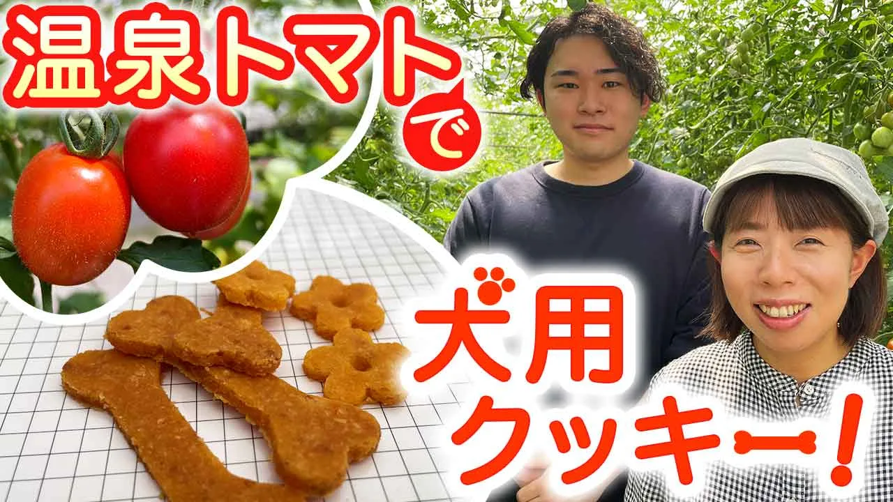
No.01
温泉トマトで犬用クッキー
記事の内容
温泉のある地域でトマトを栽培する農家が、犬用クッキーを販売したという記事のサムネイルです。
制作のポイント
いただいた写真の中から、タイトルの雰囲気が伝わる1枚を選んでトリミングしました。
「犬用クッキー！」の文字には犬の足跡や骨の形をあしらい、遊び心とワクワク感を加えています。
-
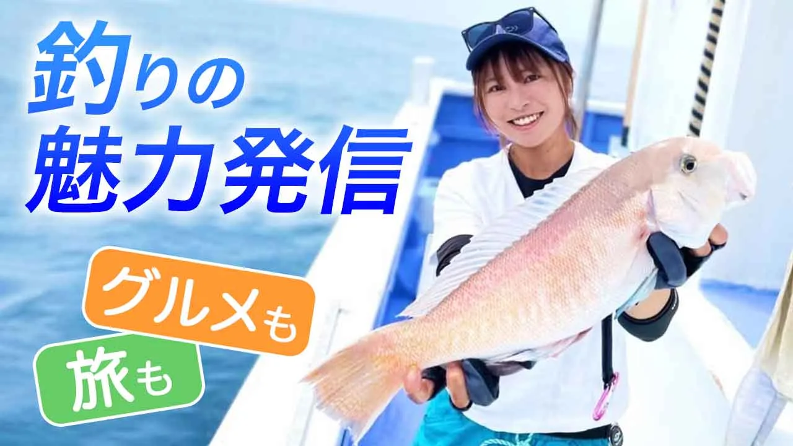
No.02
釣りの魅力発信
記事の内容
釣り好きの20代女性が釣りの体験コーチを務め、地元の人たちと交流を深めているという記事のサムネイルです。
制作のポイント
どの写真も写りは良かったものの、女性が中央に写っていて文字とのバランスが取りづらかったため、女性を右に寄せました。空いた左側にはPhotoshopの生成AIで海を描き足し、その上にタイトルを載せています。
「グルメ」「旅」という言葉から旅行雑誌を連想したので、文字の下に敷く座布団は旅行誌のタブのような形にしました。
-
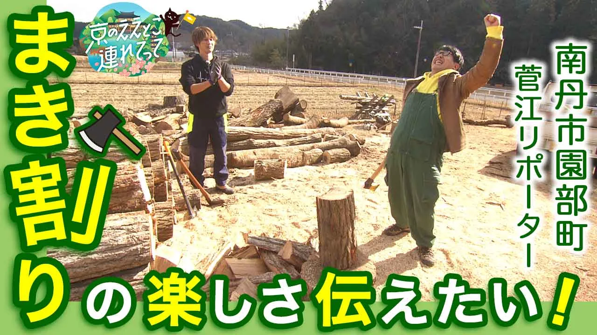
No.03
薪割りの楽しさ伝えたい
記事の内容
京都の魅力を発信する、菅江リポーターの連載記事のサムネイルです。
制作のポイント
薪を割る瞬間の写真がなかったため、何をしているかが伝わるよう現場全体を見せる構図にしました。メインの菅江リポーターと割れた薪以外には文字を重ね、雰囲気が伝わることを優先しています。
「まき割り」の「割」の字を斧でパカッと割り、見た目の楽しさを加えました。
-
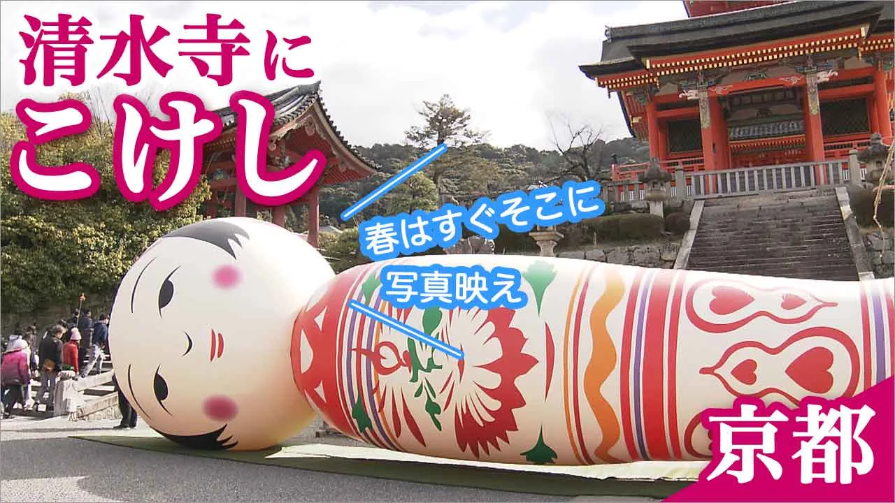
No.04
清水寺にこけし
記事の内容
京都・清水寺に巨大なこけしのオブジェが置かれたという記事のサムネイルです。
制作のポイント
写真そのものにインパクトがあり構図も良かったので、こけし、背景のお寺、左端の小さな人物を隠さないように文字を配置しました。
このこけしは人が近くを通るとしゃべるそうなので、口元に「春はすぐそこに」「写真映え」とセリフを添えています。
-
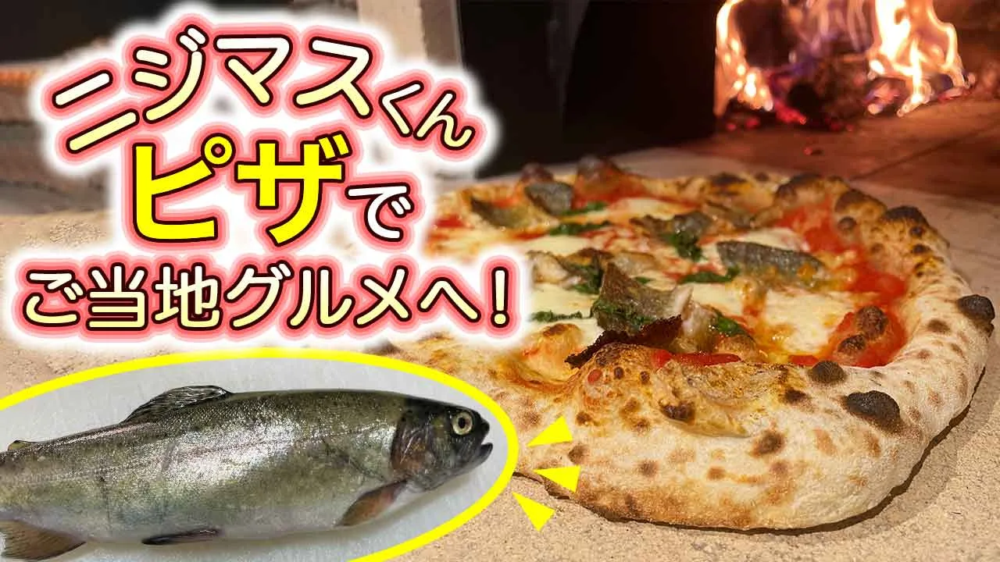
No.05
ニジマスピザ
記事の内容
静岡県で生まれた、ニジマスと石窯ピザを組み合わせたご当地グルメを紹介する記事のサムネイルです。
制作のポイント
ニジマスとピザを大きく見せつつ、右上に石窯の炎を入れて画面に奥行きを出しました。写真がかなり暗かったため、白飛びしないよう気をつけながら明度と彩度を大きく引き上げています。
1行目の「ニジマスくん」はアーチ状に曲げ、石窯の入り口に見立てました。
-
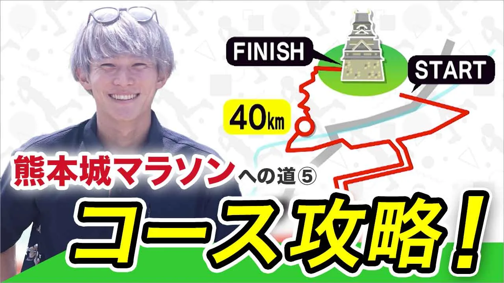
No.06
熊本城マラソン・コース攻略
記事の内容
ランニングコーチの三津家貴也さんと一緒に熊本城マラソンの攻略を目指す、シリーズ記事のサムネイルです。
制作のポイント
もともと動画で配信された企画をWeb記事にしたもので、動画内で使われていたマラソンコースのイラストを切り出して背景に使いました。三津家さんの切り抜きは、その隣に大きく配置しています。
シリーズものなので「熊本城マラソンへの道」は小さめにし、「コース攻略！」を大きく目立たせました。
-
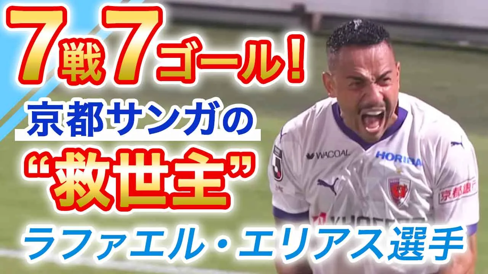
No.07
7戦7ゴール！ラファエル・エリアス選手
記事の内容
2024年夏の来日直後に京都サンガF.C.へ加入し、わずか7試合で7ゴールを挙げてチームの救世主となった、ラファエル・エリアス選手の記事のサムネイルです。
制作のポイント
スポーツ新聞の見出しの雰囲気に寄せ、文字は赤・青・白を中心とした配色にしました。
背景の左側が足りず生成AIで描き足したところ、ゆがみが出てしまったため、文字を大きく重ねて目立たないようにしました。それでも気になる左上には水色の三角形を載せ、完全に隠しています。
-
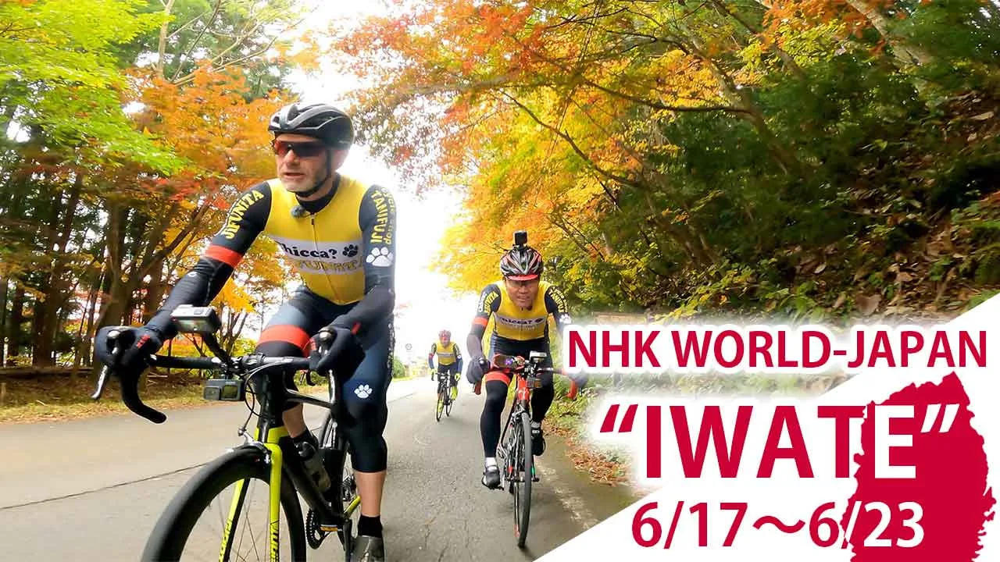
No.08
NHK WORLD-JAPAN 岩手特集
記事の内容
NHKの岩手特集記事のサムネイルです。
制作のポイント
英語版と日本語版の2種類が必要だったため、テキストが変わってもサムネイルの雰囲気が変わらないよう、色や配置を揃えました。
テキストだけでは少し寂しく感じたので、右下に岩手県のシルエットを置き、ご当地サイトのバナーのような雰囲気を出しています。
-
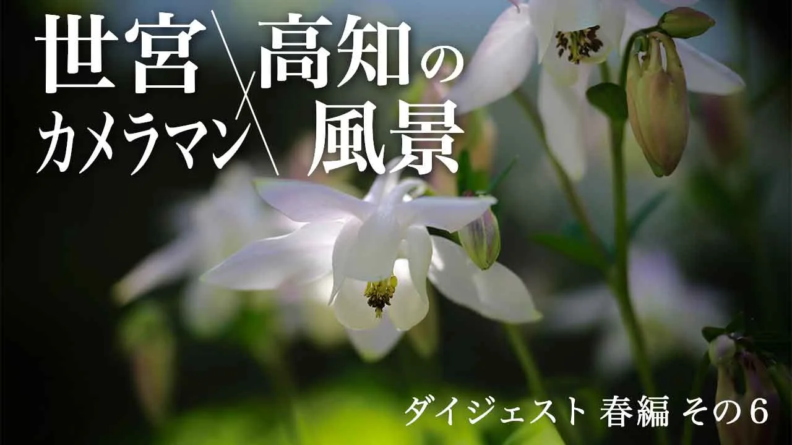
No.09
世宮カメラマン×高知の風景
記事の内容
高知の風景写真を撮るカメラマンの、シリーズ記事のサムネイルです。
制作のポイント
「写真集の表紙のようなデザインに」というご要望をいただき、書店で実物をいくつか観察しました。装飾を抑えたシンプルな文字組みが多かったため、写真を大きく見せ、文字も「白＋シャドウ」のシンプルな表現にしています。
タイトルの「×」だけは、洗練された印象を崩さない範囲で「／」のように変形させ、文字数の多いタイトルがきれいにまとまるよう整えました。
-
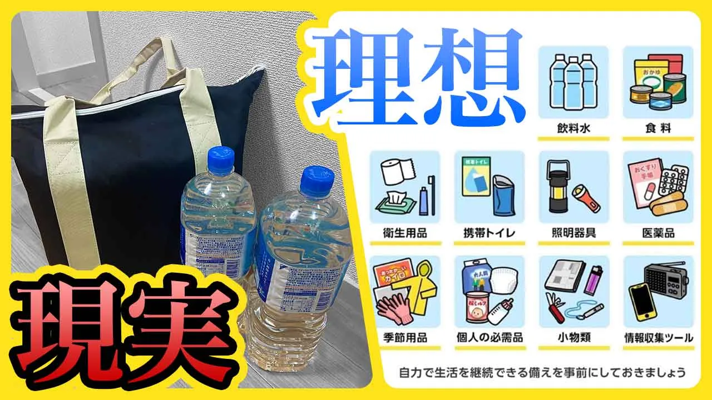
No.10
いざという時の備え、どれくらいできていますか？
記事の内容
一般に必要とされる災害への備え（理想）と、筆者の家で実際に備えているもの（現実）とのギャップを、筆者宅の現状を交えて紹介した記事のサムネイルです。
制作のポイント
当初は左に「理想」、右に「現実」を置く構成を考えていましたが、うまく収まらなかったため左右を入れ替えました。その代わりに「理想」が上、「現実」が下に来るよう配置し、視線の流れを整えています。
ひと目で違いが伝わるよう、「理想」は青と白、「現実」は赤と黒にして、文字に軽さと重さを出しました。「現実」側の写真は背景をモノトーンにし、理想との落差を強調しています。
-
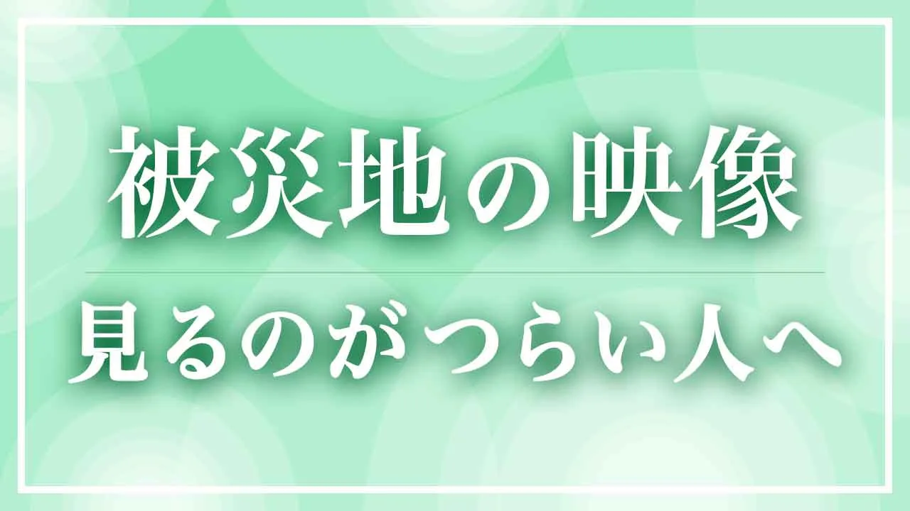
No.11
被災地の映像を見るのがつらい人へ
記事の内容
石川県や熊本の震災など、ニュースで繰り返し流れる被災地の映像を見るうちに、被災していなくても気持ちが沈んでしまう人に向けた、心の保ち方についての記事のサムネイルです。
制作のポイント
使える映像や画像がなかったため、この記事を読む人の立場に立って考えました。気持ちが沈んでいる人には、黒や灰色などの重い色はかえってつらく感じられると考え、木漏れ日のようなやさしい光をイメージして背景をデザインしています。
文字に背景の光の白が重ならないよう位置を調整し、白抜き文字にはシャドウを入れて、文字が手前に浮かび上がるようにしました。
-
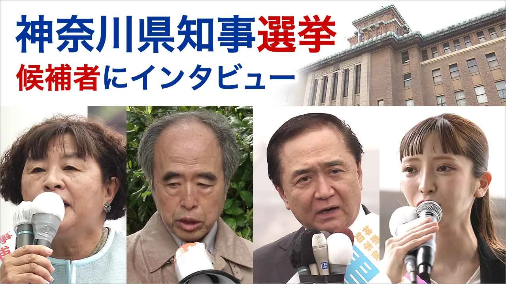
No.12
神奈川県知事選挙 候補者インタビュー
記事の内容
神奈川県知事選挙の候補者インタビュー記事のサムネイルです。
制作のポイント
政治の記事なので遊びは抑え、候補者全員の顔を、証明写真のような四角い切り抜きで横一列に並べました。
画面上部にはテキストを2行で置き、余白部分に神奈川県議会の議事堂を入れています。